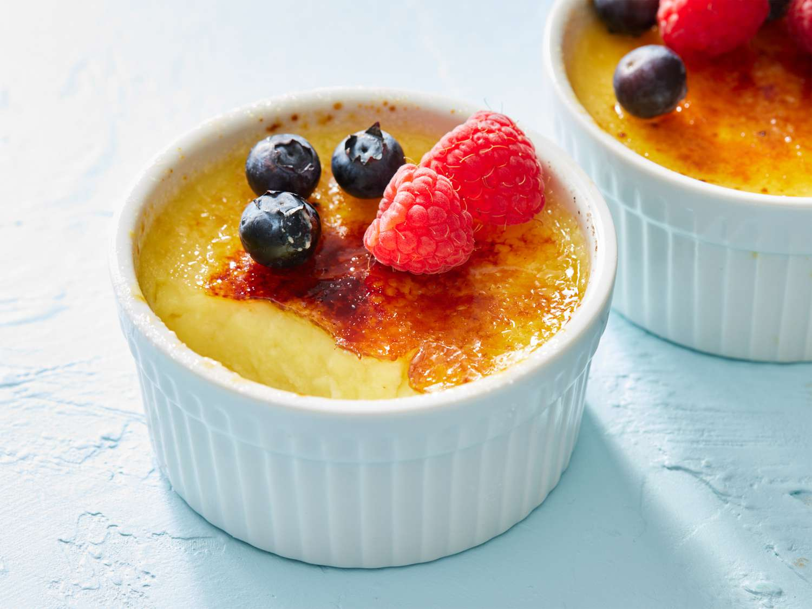

A Crème brûlée, que significa "creme queimado" em francês, é uma sobremesa clássica e elegante. Consiste em uma base de creme de baunilha rica e cremosa, coberta com uma camada fina e crocante de açúcar caramelizado, que se quebra com uma colher.
Ingredientes
- 500 ml de creme de leite fresco
- 6 gemas de ovo
- 100 g de açúcar refinado
- 1 colher de chá de extrato de baunilha (ou 1 fava de baunilha)
- 4 colheres de sopa de açúcar mascavo (ou refinado) para a cobertura
- Uma pitada de sal
Instruções de Preparo
- Pré-aqueça o forno a 150°C. Separe 4 ramequins (tigelas de cerâmica) e coloque-os dentro de uma assadeira.
- Em uma panela, aqueça o creme de leite com o extrato de baunilha e uma pitada de sal, sem deixar ferver. Reserve.
- Em uma tigela separada, bata as gemas com o açúcar refinado até obter um creme claro e fofo.
- Adicione o creme de leite morno às gemas, aos poucos e mexendo constantemente, para não cozinhar as gemas.
- Passe a mistura por uma peneira fina para garantir a textura sedosa.
- Despeje o creme nos ramequins. Adicione água quente na assadeira, criando um banho-maria até a metade da altura dos ramequins.
- Leve ao forno por cerca de 30-40 minutos, ou até que a borda do creme esteja firme, mas o centro ainda trema levemente.
- Retire do forno e deixe esfriar completamente à temperatura ambiente, depois leve à geladeira por no mínimo 4 horas, ou idealmente, de um dia para o outro.
- Antes de servir, polvilhe uma camada uniforme de açúcar mascavo sobre a superfície de cada creme. Use um maçarico culinário para queimar o açúcar até que ele derreta e forme uma casquinha dourada e crocante.